Library of Real mathematical functions as input/output blocks
This package contains basic mathematical operations, such as summation and multiplication, and basic mathematical functions, such as sqrt and sin, as input/output blocks. All blocks of this library can be either connected with continuous blocks or with sampled-data blocks.
Extends from Modelica.Icons.Package (Icon for standard packages).
| Name | Description |
|---|---|
| Conversion blocks to convert between SI and non-SI unit signals | |
| InverseBlockConstraints | Construct inverse model by requiring that two inputs and two outputs are identical (replaces the previously, unbalanced, TwoInputs and TwoOutputs blocks) |
| Gain | Output the product of a gain value with the input signal |
| Output the product of a gain matrix with the input signal vector | |
| 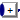 MultiSum | Sum of Reals: y = k[1]*u[1] + k[2]*u[2] + ... + k[n]*u[n] |
| MultiProduct | Product of Reals: y = u[1]*u[2]* ... *u[n] |
| Set Real expression that is associated with the first active input signal | |
| 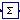 Sum | Output the sum of the elements of the input vector |
| 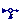 Feedback | Output difference between commanded and feedback input |
| Add | Output the sum of the two inputs |
| 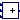 Add3 | Output the sum of the three inputs |
| Product | Output product of the two inputs |
| Division | Output first input divided by second input |
| Abs | Output the absolute value of the input |
| Sign | Output the sign of the input |
| 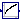 Sqrt | Output the square root of the input (input >= 0 required) |
| 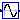 Sin | Output the sine of the input |
| 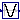 Cos | Output the cosine of the input |
| Tan | Output the tangent of the input |
| Asin | Output the arc sine of the input |
| 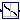 Acos | Output the arc cosine of the input |
| 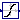 Atan | Output the arc tangent of the input |
| 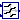 Atan2 | Output atan(u1/u2) of the inputs u1 and u2 |
| 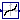 Sinh | Output the hyperbolic sine of the input |
| Cosh | Output the hyperbolic cosine of the input |
| 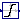 Tanh | Output the hyperbolic tangent of the input |
| Exp | Output the exponential (base e) of the input |
| 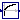 Log | Output the natural (base e) logarithm of the input (input > 0 required) |
| 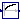 Log10 | Output the base 10 logarithm of the input (input > 0 required) |
| RealToInteger | Convert Real to Integer signal |
| IntegerToReal | Convert Integer to Real signals |
| 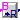 BooleanToReal | Convert Boolean to Real signal |
| BooleanToInteger | Convert Boolean to Integer signal |
| 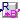 RealToBoolean | Convert Real to Boolean signal |
| IntegerToBoolean | Convert Integer to Boolean signal |
| RectangularToPolar | Convert rectangular coordinates to polar coordinates |
| PolarToRectangular | Convert polar coordinates to rectangular coordinates |
| Calculate mean over period 1/f | |
| Calculate rectified mean over period 1/f | |
| Calculate root mean square over period 1/f | |
| Harmonic | Calculate harmonic over period 1/f |
| Max | Pass through the largest signal |
| Min | Pass through the smallest signal |
| MinMax | Output the minimum and the maximum element of the input vector |
| LinearDependency | Output a linear combination of the two inputs |
| Edge | Indicates rising edge of Boolean signal |
| BooleanChange | Indicates Boolean signal changing |
| 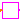 IntegerChange | Indicates integer signal changing |
Construct inverse model by requiring that two inputs and two outputs are identical (replaces the previously, unbalanced, TwoInputs and TwoOutputs blocks)
Exchange input and output signals of a block, i.e., the previous block inputs become block outputs and the previous block outputs become block inputs. This block is used to construct inverse models. Its usage is demonstrated in example: Modelica.Blocks.Examples.InverseModel.
Note, if a block shall be inverted that has several input and output blocks, then this can be easily achieved by using a vector of InverseBlockConstraints instances:
InverseBlockConstraint invert[3]; // Block to be inverted has 3 input signals
| Name | Description |
|---|---|
| u1 | Input signal 1 (u1 = u2) |
| u2 | Input signal 2 (u1 = u2) |
| y1 | Output signal 1 (y1 = y2) |
| y2 | Output signal 2 (y2 = y2) |
 Modelica.Blocks.Math.Gain
Modelica.Blocks.Math.GainOutput the product of a gain value with the input signal
This block computes output y as product of gain k with the input u:
y = k * u;
| Name | Description |
|---|---|
| k | Gain value multiplied with input signal [1] |
| Name | Description |
|---|---|
| u | Input signal connector |
| y | Output signal connector |
 Modelica.Blocks.Math.MatrixGain
Modelica.Blocks.Math.MatrixGainOutput the product of a gain matrix with the input signal vector
This blocks computes output vector y as product of the gain matrix K with the input signal vector u:
y = K * u;
Example:
parameter: K = [0.12 2; 3 1.5]
results in the following equations:
| y[1] | | 0.12 2.00 | | u[1] |
| | = | | * | |
| y[2] | | 3.00 1.50 | | u[2] |
Extends from Interfaces.MIMO (Multiple Input Multiple Output continuous control block).
| Name | Description |
|---|---|
| K[:, :] | Gain matrix which is multiplied with the input |
| nin | Number of inputs |
| nout | Number of outputs |
| Name | Description |
|---|---|
| u[nin] | Connector of Real input signals |
| y[nout] | Connector of Real output signals |
Sum of Reals: y = k[1]*u[1] + k[2]*u[2] + ... + k[n]*u[n]
This blocks computes the scalar Real output "y" as sum of the elements of the Real input signal vector u:
y = k[1]*u[1] + k[2]*u[2] + ... k[N]*u[N];
The input connector is a vector of Real input signals. When a connection line is drawn, the dimension of the input vector is enlarged by one and the connection is automatically connected to this new free index (thanks to the connectorSizing annotation).
The usage is demonstrated, e.g., in example Modelica.Blocks.Examples.RealNetwork1.
If no connection to the input connector "u" is present, the output is set to zero: y=0.
Extends from Modelica.Blocks.Interfaces.PartialRealMISO (Partial block with a RealVectorInput and a RealOutput signal).
| Name | Description |
|---|---|
| k[nu] | Input gains |
| Advanced | |
| significantDigits | Number of significant digits to be shown in dynamic diagram layer for y |
| Name | Description |
|---|---|
| u[nu] | |
| y |
 Modelica.Blocks.Math.MultiProduct
Modelica.Blocks.Math.MultiProductProduct of Reals: y = u[1]*u[2]* ... *u[n]
This blocks computes the scalar Real output "y" as product of the elements of the Real input signal vector u:
y = u[1]*u[2]* ... *u[N];
The input connector is a vector of Real input signals. When a connection line is drawn, the dimension of the input vector is enlarged by one and the connection is automatically connected to this new free index (thanks to the connectorSizing annotation).
The usage is demonstrated, e.g., in example Modelica.Blocks.Examples.RealNetwork1.
If no connection to the input connector "u" is present, the output is set to zero: y=0.
Extends from Modelica.Blocks.Interfaces.PartialRealMISO (Partial block with a RealVectorInput and a RealOutput signal).
| Name | Description |
|---|---|
| Advanced | |
| significantDigits | Number of significant digits to be shown in dynamic diagram layer for y |
| Name | Description |
|---|---|
| u[nu] | |
| y |
Set Real expression that is associated with the first active input signal
This block has a vector of Boolean input signals u[nu] and a vector of (time varying) Real expressions expr[nu]. The output signal y is set to expr[i], if i is the first element in the input vector u that is true. If all input signals are false, y is set to parameter "y_default".
// Conceptual equation (not valid Modelica) i = 'first element of u[:] that is true'; y = if i==0 then y_default else expr[i];
The input connector is a vector of Boolean input signals. When a connection line is drawn, the dimension of the input vector is enlarged by one and the connection is automatically connected to this new free index (thanks to the connectorSizing annotation).
The usage is demonstrated, e.g., in example Modelica.Blocks.Examples.RealNetwork1.
| Name | Description |
|---|---|
| expr[nu] | y = if u[i] then expr[i] else y_default (time varying) |
| y_default | Default value of output y if all u[i] = false |
| Advanced | |
| precision | Number of significant digits to be shown in dynamic diagram layer for y |
| Name | Description |
|---|---|
| u[nu] | Set y = expr[i], if u[i] = true |
| y | Output depending on expression |
 Modelica.Blocks.Math.Sum
Modelica.Blocks.Math.SumOutput the sum of the elements of the input vector
This blocks computes output y as sum of the elements of the input signal vector u:
y = u[1] + u[2] + ...;
Example:
parameter: nin = 3;
results in the following equations:
y = u[1] + u[2] + u[3];
Extends from Interfaces.MISO (Multiple Input Single Output continuous control block).
| Name | Description |
|---|---|
| nin | Number of inputs |
| k[nin] | Optional: sum coefficients |
| Name | Description |
|---|---|
| u[nin] | Connector of Real input signals |
| y | Connector of Real output signal |
 Modelica.Blocks.Math.Feedback
Modelica.Blocks.Math.FeedbackOutput difference between commanded and feedback input
This blocks computes output y as difference of the commanded input u1 and the feedback input u2:
y = u1 - u2;
Example:
parameter: n = 2
results in the following equations:
y = u1 - u2
| Name | Description |
|---|---|
| u1 | |
| u2 | |
| y |
 Modelica.Blocks.Math.Add
Modelica.Blocks.Math.AddOutput the sum of the two inputs
This blocks computes output y as sum of the two input signals u1 and u2:
y = k1*u1 + k2*u2;
Example:
parameter: k1= +2, k2= -3
results in the following equations:
y = 2 * u1 - 3 * u2
Extends from Interfaces.SI2SO (2 Single Input / 1 Single Output continuous control block).
| Name | Description |
|---|---|
| k1 | Gain of upper input |
| k2 | Gain of lower input |
| Name | Description |
|---|---|
| u1 | Connector of Real input signal 1 |
| u2 | Connector of Real input signal 2 |
| y | Connector of Real output signal |
 Modelica.Blocks.Math.Add3
Modelica.Blocks.Math.Add3Output the sum of the three inputs
This blocks computes output y as sum of the three input signals u1, u2 and u3:
y = k1*u1 + k2*u2 + k3*u3;
Example:
parameter: k1= +2, k2= -3, k3=1;
results in the following equations:
y = 2 * u1 - 3 * u2 + u3;
Extends from Modelica.Blocks.Icons.Block (Basic graphical layout of input/output block).
| Name | Description |
|---|---|
| k1 | Gain of upper input |
| k2 | Gain of middle input |
| k3 | Gain of lower input |
| Name | Description |
|---|---|
| u1 | Connector 1 of Real input signals |
| u2 | Connector 2 of Real input signals |
| u3 | Connector 3 of Real input signals |
| y | Connector of Real output signals |
 Modelica.Blocks.Math.Product
Modelica.Blocks.Math.ProductOutput product of the two inputs
This blocks computes the output y (element-wise) as product of the corresponding elements of the two inputs u1 and u2:
y = u1 * u2;
Extends from Interfaces.SI2SO (2 Single Input / 1 Single Output continuous control block).
| Name | Description |
|---|---|
| u1 | Connector of Real input signal 1 |
| u2 | Connector of Real input signal 2 |
| y | Connector of Real output signal |
 Modelica.Blocks.Math.Division
Modelica.Blocks.Math.DivisionOutput first input divided by second input
This block computes the output y (element-wise) by dividing the corresponding elements of the two inputs u1 and u2:
y = u1 / u2;
Extends from Interfaces.SI2SO (2 Single Input / 1 Single Output continuous control block).
| Name | Description |
|---|---|
| u1 | Connector of Real input signal 1 |
| u2 | Connector of Real input signal 2 |
| y | Connector of Real output signal |
 Modelica.Blocks.Math.Abs
Modelica.Blocks.Math.AbsOutput the absolute value of the input
This blocks computes the output y as absolute value of the input u:
y = abs( u );
The Boolean parameter generateEvent decides whether Events are generated at zero crossing (Modelica specification before 3) or not.
Extends from Interfaces.SISO (Single Input Single Output continuous control block).
| Name | Description |
|---|---|
| generateEvent | Choose whether events shall be generated |
| Name | Description |
|---|---|
| u | Connector of Real input signal |
| y | Connector of Real output signal |
 Modelica.Blocks.Math.Sign
Modelica.Blocks.Math.SignOutput the sign of the input
This blocks computes the output y as sign of the input u:
1 if u > 0
y = 0 if u == 0
-1 if u < 0
The Boolean parameter generateEvent decides whether Events are generated at zero crossing (Modelica specification before 3) or not.
Extends from Interfaces.SISO (Single Input Single Output continuous control block).
| Name | Description |
|---|---|
| generateEvent | Choose whether events shall be generated |
| Name | Description |
|---|---|
| u | Connector of Real input signal |
| y | Connector of Real output signal |
 Modelica.Blocks.Math.Sqrt
Modelica.Blocks.Math.SqrtOutput the square root of the input (input >= 0 required)
This blocks computes the output y as square root of the input u:
y = sqrt( u );
All elements of the input vector shall be zero or positive. Otherwise an error occurs.
Extends from Interfaces.SISO (Single Input Single Output continuous control block).
| Name | Description |
|---|---|
| u | Connector of Real input signal |
| y | Connector of Real output signal |
 Modelica.Blocks.Math.Sin
Modelica.Blocks.Math.SinOutput the sine of the input
This blocks computes the output y as sine of the input u:
y = sin( u );

Extends from Interfaces.SISO (Single Input Single Output continuous control block).
| Name | Description |
|---|---|
| u | Connector of Real input signal |
| y | Connector of Real output signal |
 Modelica.Blocks.Math.Cos
Modelica.Blocks.Math.CosOutput the cosine of the input
This blocks computes the output y as cos of the input u:
y = cos( u );

Extends from Interfaces.SISO (Single Input Single Output continuous control block).
| Name | Description |
|---|---|
| u | Connector of Real input signal |
| y | Connector of Real output signal |
 Modelica.Blocks.Math.Tan
Modelica.Blocks.Math.TanOutput the tangent of the input
This blocks computes the output y as tan of the input u:
y = tan( u );

Extends from Interfaces.SISO (Single Input Single Output continuous control block).
| Name | Description |
|---|---|
| u | Connector of Real input signal |
| y | Connector of Real output signal |
 Modelica.Blocks.Math.Asin
Modelica.Blocks.Math.AsinOutput the arc sine of the input
This blocks computes the output y as the sine-inverse of the input u:
y = asin( u );
The absolute values of the elements of the input u need to be less or equal to one (abs( u ) <= 1). Otherwise an error occurs.

Extends from Interfaces.SISO (Single Input Single Output continuous control block).
| Name | Description |
|---|---|
| u | Connector of Real input signal |
| y | Connector of Real output signal |
 Modelica.Blocks.Math.Acos
Modelica.Blocks.Math.AcosOutput the arc cosine of the input
This blocks computes the output y as the cosine-inverse of the input u:
y = acos( u );
The absolute values of the elements of the input u need to be less or equal to one (abs( u ) <= 1). Otherwise an error occurs.

Extends from Interfaces.SISO (Single Input Single Output continuous control block).
| Name | Description |
|---|---|
| u | Connector of Real input signal |
| y | Connector of Real output signal |
 Modelica.Blocks.Math.Atan
Modelica.Blocks.Math.AtanOutput the arc tangent of the input
This blocks computes the output y as the tangent-inverse of the input u:
y= atan( u );

Extends from Interfaces.SISO (Single Input Single Output continuous control block).
| Name | Description |
|---|---|
| u | Connector of Real input signal |
| y | Connector of Real output signal |
 Modelica.Blocks.Math.Atan2
Modelica.Blocks.Math.Atan2Output atan(u1/u2) of the inputs u1 and u2
This blocks computes the output y as the tangent-inverse of the input u1 divided by input u2:
y = atan2( u1, u2 );
u1 and u2 shall not be zero at the same time instant. Atan2 uses the sign of u1 and u2 in order to construct the solution in the range -180 deg ≤ y ≤ 180 deg, whereas block Atan gives a solution in the range -90 deg ≤ y ≤ 90 deg.

Extends from Interfaces.SI2SO (2 Single Input / 1 Single Output continuous control block).
| Name | Description |
|---|---|
| u1 | Connector of Real input signal 1 |
| u2 | Connector of Real input signal 2 |
| y | Connector of Real output signal |
 Modelica.Blocks.Math.Sinh
Modelica.Blocks.Math.SinhOutput the hyperbolic sine of the input
This blocks computes the output y as the hyperbolic sine of the input u:
y = sinh( u );

Extends from Interfaces.SISO (Single Input Single Output continuous control block).
| Name | Description |
|---|---|
| u | Connector of Real input signal |
| y | Connector of Real output signal |
 Modelica.Blocks.Math.Cosh
Modelica.Blocks.Math.CoshOutput the hyperbolic cosine of the input
This blocks computes the output y as the hyperbolic cosine of the input u:
y = cosh( u );

Extends from Interfaces.SISO (Single Input Single Output continuous control block).
| Name | Description |
|---|---|
| u | Connector of Real input signal |
| y | Connector of Real output signal |
 Modelica.Blocks.Math.Tanh
Modelica.Blocks.Math.TanhOutput the hyperbolic tangent of the input
This blocks computes the output y as the hyperbolic tangent of the input u:
y = tanh( u );

Extends from Interfaces.SISO (Single Input Single Output continuous control block).
| Name | Description |
|---|---|
| u | Connector of Real input signal |
| y | Connector of Real output signal |
 Modelica.Blocks.Math.Exp
Modelica.Blocks.Math.ExpOutput the exponential (base e) of the input
This blocks computes the output y as the exponential (of base e) of the input u:
y = exp( u );

Extends from Interfaces.SISO (Single Input Single Output continuous control block).
| Name | Description |
|---|---|
| u | Connector of Real input signal |
| y | Connector of Real output signal |
 Modelica.Blocks.Math.Log
Modelica.Blocks.Math.LogOutput the natural (base e) logarithm of the input (input > 0 required)
This blocks computes the output y as the natural (base e) logarithm of the input u:
y = log( u );
An error occurs if the elements of the input u are zero or negative.

Extends from Interfaces.SISO (Single Input Single Output continuous control block).
| Name | Description |
|---|---|
| u | Connector of Real input signal |
| y | Connector of Real output signal |
 Modelica.Blocks.Math.Log10
Modelica.Blocks.Math.Log10Output the base 10 logarithm of the input (input > 0 required)
This blocks computes the output y as the base 10 logarithm of the input u:
y = log10( u );
An error occurs if the elements of the input u are zero or negative.

Extends from Interfaces.SISO (Single Input Single Output continuous control block).
| Name | Description |
|---|---|
| u | Connector of Real input signal |
| y | Connector of Real output signal |
 Modelica.Blocks.Math.RealToInteger
Modelica.Blocks.Math.RealToIntegerConvert Real to Integer signal
This block computes the output y as nearest integer value of the input u:
y = integer( floor( u + 0.5 ) ) for u > 0;
y = integer( ceil ( u - 0.5 ) ) for u < 0;
Extends from Modelica.Blocks.Icons.IntegerBlock (Basic graphical layout of Integer block).
| Name | Description |
|---|---|
| u | Connector of Real input signal |
| y | Connector of Integer output signal |
 Modelica.Blocks.Math.IntegerToReal
Modelica.Blocks.Math.IntegerToRealConvert Integer to Real signals
This block computes the output y as Real equivalent of the Integer input u:
y = u;
where u is of Integer and y of Real type.
Extends from Modelica.Blocks.Icons.Block (Basic graphical layout of input/output block).
| Name | Description |
|---|---|
| u | Connector of Integer input signal |
| y | Connector of Real output signal |
Convert Boolean to Real signal
This block computes the output y as Real equivalent of the Boolean input u:
y = if u then realTrue else realFalse;
where u is of Boolean and y of Real type, and realTrue and realFalse are parameters.
Extends from Interfaces.partialBooleanSI (Partial block with 1 input Boolean signal).
| Name | Description |
|---|---|
| realTrue | Output signal for true Boolean input |
| realFalse | Output signal for false Boolean input |
| Name | Description |
|---|---|
| u | Connector of Boolean input signal |
| y | Connector of Real output signal |
Convert Boolean to Integer signal
This block computes the output y as Integer equivalent of the Boolean input u:
y = if u then integerTrue else integerFalse;
where u is of Boolean and y of Integer type, and integerTrue and integerFalse are parameters.
Extends from Interfaces.partialBooleanSI (Partial block with 1 input Boolean signal).
| Name | Description |
|---|---|
| integerTrue | Output signal for true Boolean input |
| integerFalse | Output signal for false Boolean input |
| Name | Description |
|---|---|
| u | Connector of Boolean input signal |
| y | Connector of Integer output signal |
Convert Real to Boolean signal
This block computes the Boolean output y from the Real input u by the equation:
y = u ≥ threshold;
where threshold is a parameter.
Extends from Interfaces.partialBooleanSO (Partial block with 1 output Boolean signal).
| Name | Description |
|---|---|
| threshold | Output signal y is true, if input u >= threshold |
| Name | Description |
|---|---|
| u | Connector of Real input signal |
| y | Connector of Boolean output signal |
Convert Integer to Boolean signal
This block computes the Boolean output y from the Integer input u by the equation:
y = u ≥ threshold;
where threshold is a parameter.
Extends from Interfaces.partialBooleanSO (Partial block with 1 output Boolean signal).
| Name | Description |
|---|---|
| threshold | Output signal y is true, if input u >= threshold |
| Name | Description |
|---|---|
| u | Connector of Integer input signal |
| y | Connector of Boolean output signal |
Convert rectangular coordinates to polar coordinates
The input values of this block are the rectangular components
u_re and u_im of a phasor in two dimensions.
This block calculates the length y_abs and
the angle y_arg of the polar representation of this phasor.
y_abs = abs(u_re + j*u_im) = sqrt( u_re2 + u_im2 ) y_arg = arg(u_re + j*u_im) = atan2(u_im, u_re)
Extends from Modelica.Blocks.Icons.Block (Basic graphical layout of input/output block).
| Name | Description |
|---|---|
| u_re | Real part of rectangular representation |
| u_im | Imaginary part of rectangular representation |
| y_abs | Length of polar representation |
| y_arg | Angle of polar representation |
Convert polar coordinates to rectangular coordinates
The input values of this block are the polar components uabs and uarg of a phasor.
This block calculates the components y_re and y_im of the rectangular representation of this phasor.
y_re = u_abs * cos( u_arg ) y_im = u_abs * sin( u_arg )
Extends from Modelica.Blocks.Icons.Block (Basic graphical layout of input/output block).
| Name | Description |
|---|---|
| u_abs | Length of polar representation |
| u_arg | Angle of polar representation |
| y_re | Real part of rectangular representation |
| y_im | Imaginary part of rectangular representation |
 Modelica.Blocks.Math.Mean
Modelica.Blocks.Math.MeanCalculate mean over period 1/f
This block calculates the mean of the input signal u over the given period 1/f:
1 T - ∫ u(t) dt T 0
Note: The output is updated after each period defined by 1/f.
If parameter yGreaterOrEqualZero in the Advanced tab is true (default = false), then the modeller provides the information that the mean of the input signal is guaranteed to be ≥ 0 for the exact solution. However, due to inaccuracies in the numerical integration scheme, the output might be slightly negative. If this parameter is set to true, then the output is explicitly set to 0.0, if the mean value results in a negative value.
Extends from Modelica.Blocks.Interfaces.SISO (Single Input Single Output continuous control block).
| Name | Description |
|---|---|
| f | Base frequency [Hz] |
| x0 | Start value of integrator state |
| Advanced | |
| yGreaterOrEqualZero | =true, if output y is guaranteed to be >= 0 for the exact solution |
| Name | Description |
|---|---|
| u | Connector of Real input signal |
| y | Connector of Real output signal |
Modelica.Blocks.Math.RectifiedMeanCalculate rectified mean over period 1/f
This block calculates the rectified mean of the input signal u over the given period 1/f, using the mean block.
Note: The output is updated after each period defined by 1/f.
Extends from Modelica.Blocks.Interfaces.SISO (Single Input Single Output continuous control block).
| Name | Description |
|---|---|
| f | Base frequency [Hz] |
| x0 | Start value of integrator state |
| Name | Description |
|---|---|
| u | Connector of Real input signal |
| y | Connector of Real output signal |
Modelica.Blocks.Math.RootMeanSquareCalculate root mean square over period 1/f
This block calculates the root mean square of the input signal u over the given period 1/f, using the mean block.
Note: The output is updated after each period defined by 1/f.
Extends from Modelica.Blocks.Interfaces.SISO (Single Input Single Output continuous control block).
| Name | Description |
|---|---|
| f | Base frequency [Hz] |
| x0 | Start value of integrator state |
| Name | Description |
|---|---|
| u | Connector of Real input signal |
| y | Connector of Real output signal |
Calculate harmonic over period 1/f
This block calculates the root mean square and the phase angle of a single harmonic k of the input signal u over the given period 1/f, using the mean block.
Note: The output is updated after each period defined by 1/f.
Note: The harmonic is defined by √2 rms cos(k 2 π f t - arg)
Extends from Modelica.Blocks.Icons.Block (Basic graphical layout of input/output block).
| Name | Description |
|---|---|
| f | Base frequency [Hz] |
| k | Order of harmonic |
| x0Cos | Start value of cos integrator state |
| x0Sin | Start value of sin integrator state |
| Name | Description |
|---|---|
| u | |
| y_rms | Root mean square of polar representation |
| y_arg | Angle of polar representation |
 Modelica.Blocks.Math.Max
Modelica.Blocks.Math.MaxPass through the largest signal
This block computes the output y as maximum of the two Real inputs u1 and u2:
y = max ( u1 , u2 );
Extends from Interfaces.SI2SO (2 Single Input / 1 Single Output continuous control block).
| Name | Description |
|---|---|
| u1 | Connector of Real input signal 1 |
| u2 | Connector of Real input signal 2 |
| y | Connector of Real output signal |
Modelica.Blocks.Math.MinPass through the smallest signal
This block computes the output y as minimum of the two Real inputs u1 and u2:
y = min ( u1 , u2 );
Extends from Interfaces.SI2SO (2 Single Input / 1 Single Output continuous control block).
| Name | Description |
|---|---|
| u1 | Connector of Real input signal 1 |
| u2 | Connector of Real input signal 2 |
| y | Connector of Real output signal |
Output the minimum and the maximum element of the input vector
Determines the minimum and maximum element of the input vector and provide both values as output.
Extends from Modelica.Blocks.Icons.Block (Basic graphical layout of input/output block).
| Name | Description |
|---|---|
| u[nu] | |
| yMax | |
| yMin |
Output a linear combination of the two inputs
Determine the linear combination of the two inputs:
y = y0*(1 + k1*u1 + k2*u2)
Extends from Modelica.Blocks.Interfaces.SI2SO (2 Single Input / 1 Single Output continuous control block).
| Name | Description |
|---|---|
| y0 | Initial value |
| k1 | u1 dependency |
| k2 | u2 dependency |
| Name | Description |
|---|---|
| u1 | Connector of Real input signal 1 |
| u2 | Connector of Real input signal 2 |
| y | Connector of Real output signal |
 Modelica.Blocks.Math.Edge
Modelica.Blocks.Math.EdgeIndicates rising edge of Boolean signal
This block sets the Boolean output y to true, when the Boolean input u shows a rising edge:
y = edge( u );
Extends from Interfaces.BooleanSISO (Single Input Single Output control block with signals of type Boolean).
| Name | Description |
|---|---|
| u | Connector of Boolean input signal |
| y | Connector of Boolean output signal |
Modelica.Blocks.Math.BooleanChangeIndicates Boolean signal changing
This block sets the Boolean output y to true, when the Boolean input u shows a rising or falling edge, i.e., when the signal changes:
y = change( u );
Extends from Interfaces.BooleanSISO (Single Input Single Output control block with signals of type Boolean).
| Name | Description |
|---|---|
| u | Connector of Boolean input signal |
| y | Connector of Boolean output signal |
 Modelica.Blocks.Math.IntegerChange
Modelica.Blocks.Math.IntegerChangeIndicates integer signal changing
This block sets the Boolean output y to true, when the Integer input u changes:
y = change( u );
Extends from Interfaces.IntegerSIBooleanSO (Integer Input Boolean Output continuous control block).
| Name | Description |
|---|---|
| u | Connector of Integer input signal |
| y | Connector of Boolean output signal |